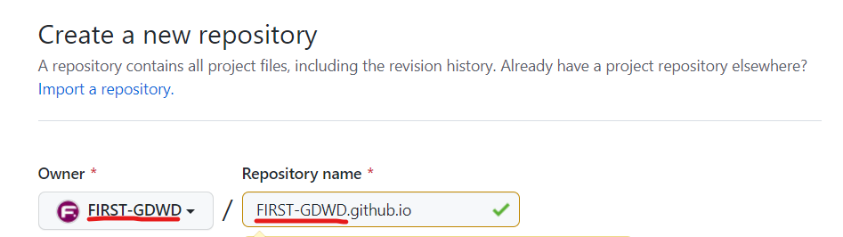
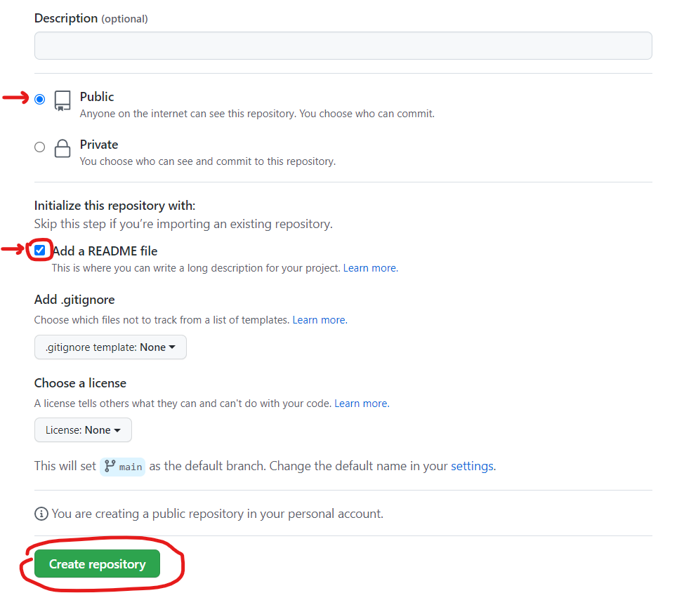

Name your new repository: your_username.github.io (replacing your_username with your actual username, of course)
NOTE: This is very important to get right!

Make sure it is public, and tell GitHub to create a README file as well. Then click the green "Create repository" button.
